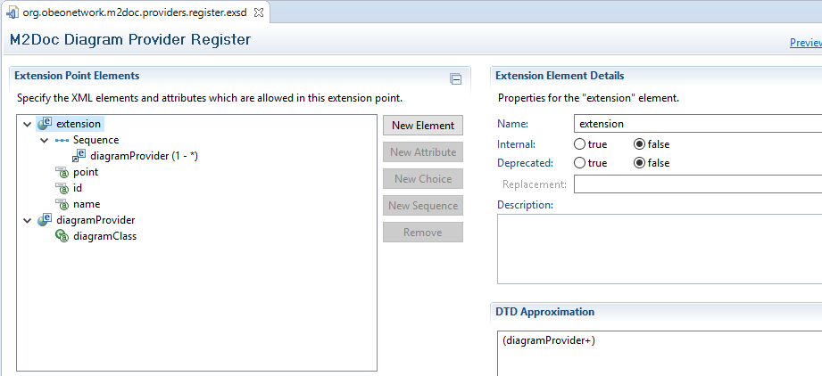
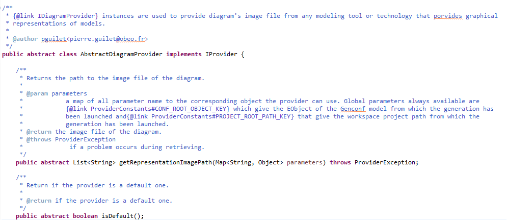
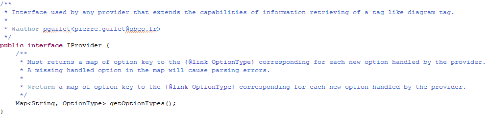
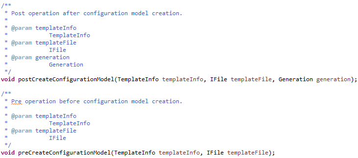
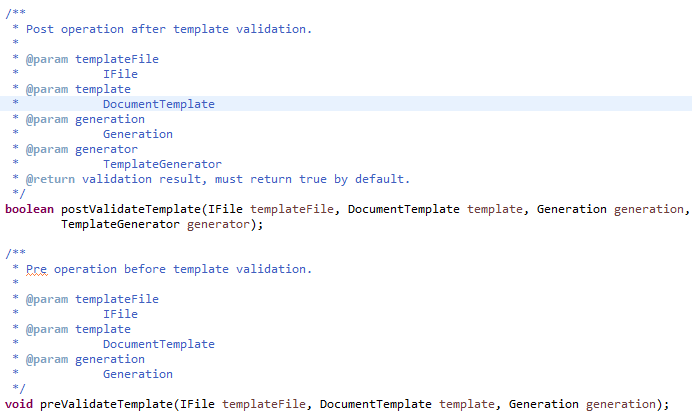
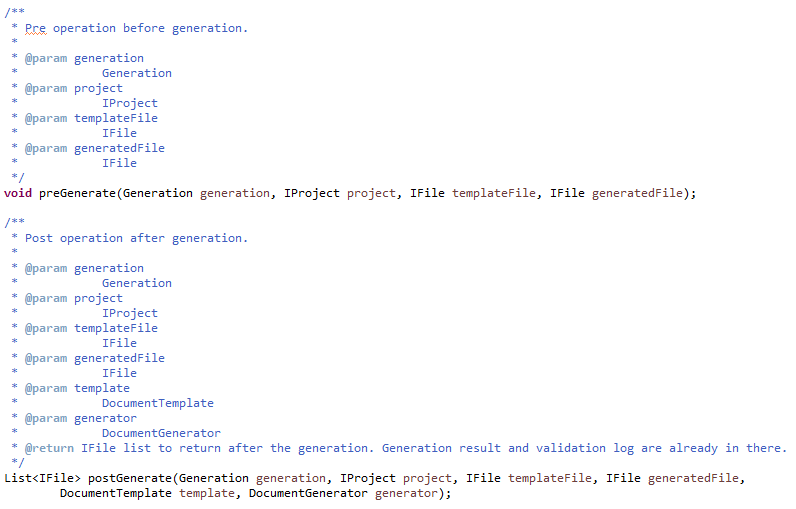
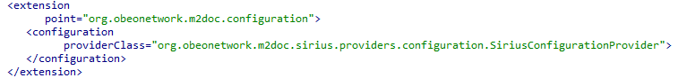
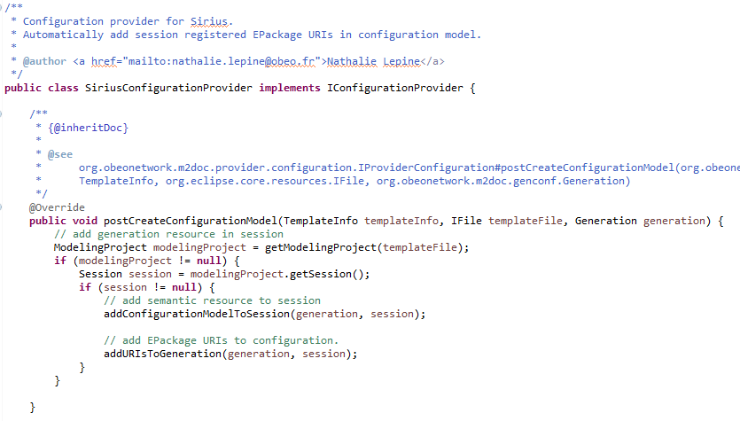
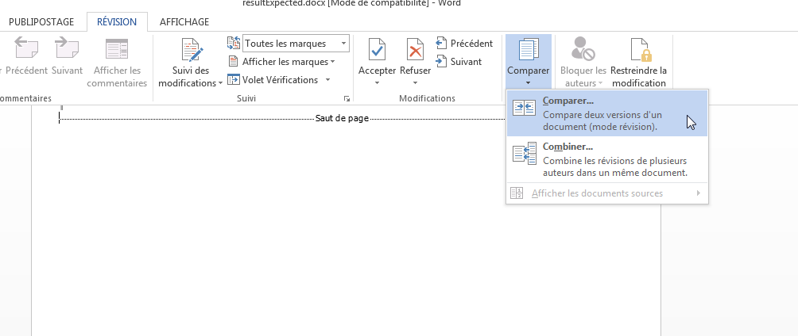
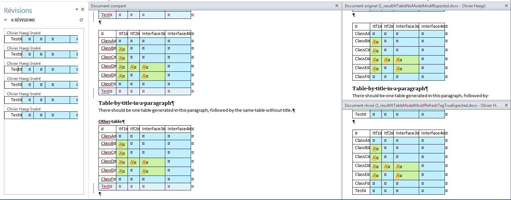

M2Doc has been designed to be an extensible template language.
It means that some tags from template language used to retrieve information from the generation environment can be used in different manner with different options. It is up to anybody to provide a way to handle a tag thanks to an extension point.
You also can provide some services to extend the AQL language.
To understand better how M2Doc is working and how you will have to contribute extensions, let’s have a look at the architecture:

The M2Doc base depends on AQL to be able to retrieve information from models or even to get a value for tag options.
It contains a unique extension point that allows to contribute diagram providers to enhanced diagram tag capabilities.
Currently, this extension point allows to provide only diagram provider. But in the future any extensible tag with the need of a different provider kind than the diagram one could be declared by this extension point (x and yProvider).
Thanks to the extension point, you can specify how some tag considered as extensible by M2Doc will be handle to generate content and what options they will contain to achieve the handling.
To extend the way the tag is used, we provide with M2Doc an extension point (org.obeonetwork.m2doc.providers.register) you will have to use:

You can specify your diagram providers with this extension point. For the moment, only diagram providers can be registered.
If new extensible tags are created in the future with the need of a different kind of provider than the diagram one, then the extension point will be enriched.
The meaning of the diagram tag is to insert an image or images one after the other from Sirius diagrams in the produced document with the use of a provider.
The extensible part of this tag is the way that images to insert are created and provided.
For example let’s consider the M2Doc provider SiriusDiagramByTitleProvider. This provider handles tag with the following format (activate fields if you don’t see it):
{ m:diagram title:"Schema Diagram" provider:"org.obeonetwork.m2doc.sirius.SiriusDiagramByTitleProvider" }
To compute images, the provider uses the title option.
To add a provider for diagram tag, just register your provider to the extension point like in the following picture:
<extension point="org.obeonetwork.m2doc.providers.register">
<diagramProvider
diagramClass="org.obeonetwork.m2doc.sirius.providers.SiriusDiagramByTitleProvider">
</diagramProvider>
</extension>
Your provider to be fully functional must be an implementation of org.obeonetwork.m2doc.provider.DiagramProvider class:

This class contains two methods:
The options map will contains all options evaluated that were present in the diagram tag except the one handled by M2Doc that are «width», «height», «legend», «legendPos» and «provider».
Options will be evaluated regarding their specified kind that must be provided with the method coming from the interface IProvider of all diagram providers or not:

This method allows to specify how each option will be parsed and provided by associating the option’s key and an evaluation kind.
For the moment, two kinds of evaluation can be done by M2Doc with option:
A JAVA enum contains all the kind of evaluation that M2Doc provides (org.obeonetwork.m2doc.provider.OptionType).
In our example, «title» is an AQL expression. The method looks like this:

If no option type is provided for an option, then the default STRING one will be use.
If we have a provider tag, we try to get this provider. If it is not found, we get all the registered providers via the m2doc extension point, we iterate on them and the first provider witch have its mandatory option tags matching is chosen. If a provider is defined by default, it will be added at the beginning of this list, so it will have priority on the others.
The provider tag is optional, if your provider is by default, it will be tested before the other ones. That allows to write
<m:diagram title="'myDiagram'"> instead of
<m:diagram title="'myDiagram'" provider:"org.obeonetwork.m2doc.sirius.SiriusDiagramByTitleProvider">
In order to handle the
{m:wtable} tag, an extension mechanism must be used.
The extension point simply requires a qualified class name, and the provided class
must extend
org.obeonetwork.m2doc.provider.AbstractTableProvider.
The implementation is responsible for providing a table model defined by the classes
MTable,
MColumn,
MRow,
MCell, and
MStyle. These classes are declared in
AbstractTableProvider.
Error management in providers (diagram, table, or whatever kind of provider may appear in the future), uses
ProviderException.
If some parameters are missing or are incorrect, you can warn M2Doc by throwing a
ProviderException with the desired message.
When M2Doc catches this exception it will insert the exception message at the tag position in the output document.
Currently, only the tags ‹diagram› and ‹wtable› can be extended. But any new tag that will be added and which will be considered as extensible could have providers attached to it.
One of the nice feature of the AQL engine is that the set of services is extensible at will. In the field of document generation, it means that we may provide, for a given application, a set of services that are tailored to ease the development of templates against a given meta model.
As the technology matures, we will also probably provide a set of services that are of general interest for model to document generation.
Yet, how do we register AQL services? Here’s a step by step guide based on the example provided in the M2Doc repository.
AQL Services are provided through simple Java classes with a no-argument constructor. Services are the method of the class. The values of the method parameters are provided through the arguments of the service call in the AQL queries (for that matter, the target of the service call is considered as the first argument of the service call). For instance, the next AQL expression
db.allTables()
makes a call to the corresponding method in the Database service’s class:
public List<Table> allTables(DataBase db)
In that example, there’s a single parameter which is filled with the service’s call target.
Nothing prevents to pass on other arguments.
The service class looks like this:
public class DatabaseServices {
/**
* No arg constructor required by the AQL runtime.
*/
public DatabaseServices() {
}
/**
* Returns the content of a table cell that is checked when the column is in
* a foreign key.
*
* @param col the column.
* @return the character 'X' when the column is a foreign key.
*/
public String checkForeignKey(Column col) {
return col.isInForeignKey() ? "X" : "";
}
}
We only left the first method to illustrate the way of writing services.
For the M2Doc engine to be able to call services from AQL queries, it is necessary that those are registered in some way. To allow this, the M2Doc runtime provides an extension point. A plug-in that contribute services to the M2Doc runtime must then declare an extension to do so:

The extension has two attributes:
Alternatively, a given M2Doc integration is free to provide a set of standard services that will be registered in the integration code. In such a scenario, documentation generation will probably be made through integration’s specific actions that aren’t documented here.
An extension point org.obeonetwork.m2doc.configuration is given by M2Doc to specify operations before and/or after the 3 actions:
This extension point defines a provider Java class. This provider implements the interface org.obeonetwork.m2doc.provider.configuration.IConfigurationProvider and defines methods for:


Warning : postValidateTemplate must return TRUE by default.

The postTemplateGeneration must return an empty list by default.
The extension point looks like this:

An example of post configuration model is done in org.obeometwork.m2doc.sirius: if the configuration model initialization is done in a modeling project, the modeling project registered packages URIs are automatically added to the configuration model.

To test M2Doc, we need to compare docx documents. WORD has a tool for that.
To use it, you need to open in WORD the documents to compare and run the compare tool in WORD : «Review / Compare / Compare... » or in French version "Révision / Comparer / Comparer..."

Select the documents to compare:

Files tagged «Compatible mode» are files edited by WORD.
You can quickly examine the differences between the documents:
